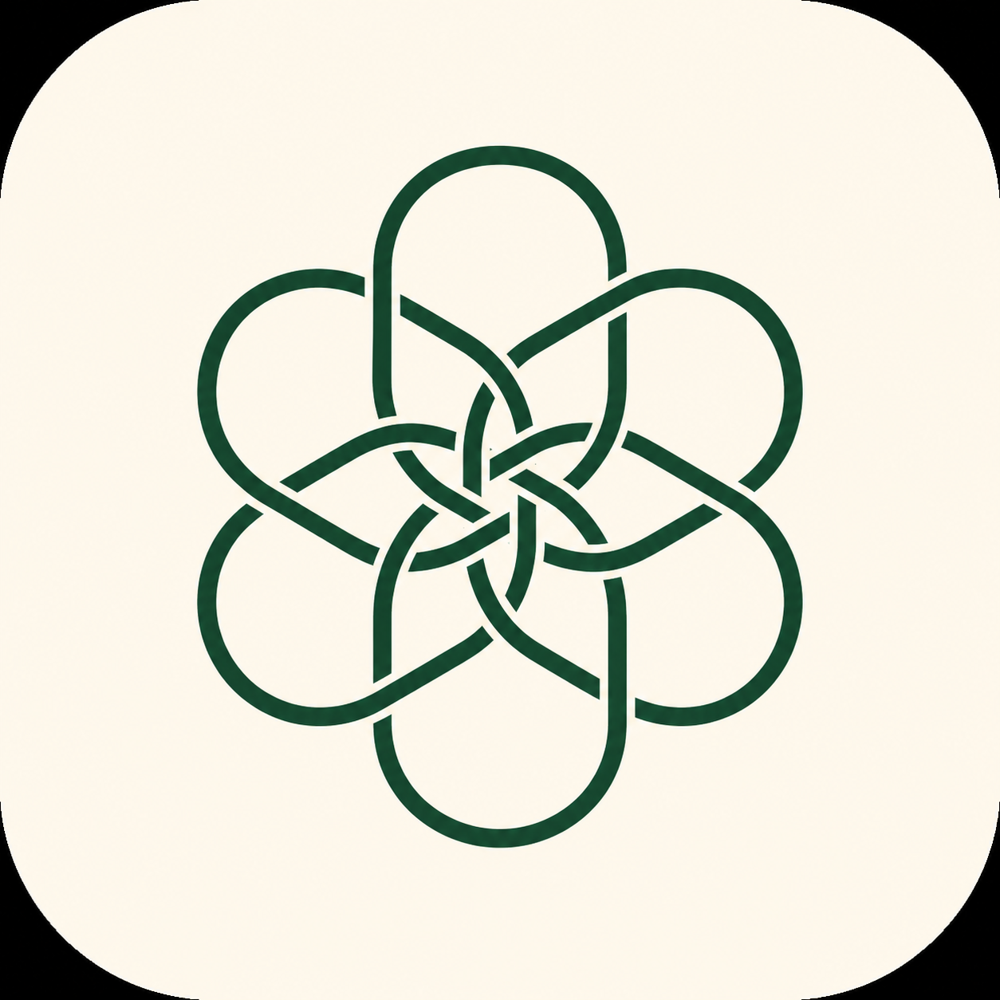

100만 명의 가상 고객을 미리 마련
AI가 비교할 수 있는 형태(좌표)로 미리 저장
약관·카피를 넣으면 가장 맞는 고객 자동 탐색
기획·마케팅·영업이 실제 결정에 사용
①②는 한 번만 — 한번 깔아두면 이후 신상품마다 분석은 매번 몇 초
일반 테이블은 "40대 / 여성 / 기혼"만 남깁니다. 이 데이터는 직업 성향, 가족 관계, 생활비 압박, 관심사 같은 자연어 맥락까지 담습니다. 그래서 보험 약관의 보장 구조를 고객의 실제 생활 고민과 맞춰 볼 수 있습니다.
"40대 / 여성 / 기혼"
숫자 테이블 — 사람이 안 보입니다
"용인 수지의 단독주택에 사는 39세 변호사 워킹맘"
직업 성향 · 가족 관계 · 생활 서사까지 자연어로
'가족 걱정' · '노후 비용' · '육아 공백' — 통계표에는 안 잡히는 맥락까지 반영. 그래서 정량 필터(나이·지역·직업)와 자연어 의미를 동시에 씁니다.
'육아맘'이라는 단어가 문서에 그대로 있는지만 봅니다
워킹맘복직맘아이엄마→ 신상품 나올 때마다 키워드 사전을 수작업 보정
뜻이 가까운 고객을 함께 인식합니다
육아 부담복직 공백자녀 교육비→ 신상품마다 키워드 사전을 새로 안 짜도 됩니다
약관·카피를 넣으면 반응률이 가장 높은 고객과 그 공략 지역, FP 영업 전략까지 한 번에.
카피 두 안 중 어느 쪽이 어느 고객층에 더 먹히는지 출고 전에 비교.
신상품이 기존 상품 고객을 뺏어오지 않는지 미리 진단. LLM 호출 0.
/cannibal로 라인업 자기잠식까지 점검A안 vs B안 — 어느 쪽이 더 먹히는지 출고 전 비교
한정된 마케팅 예산을 전국 어느 시군구에 집중할지
FP가 현장에서 그 고객에게 쓸 화법까지
2026 한화손해보험 바이브코딩 경진대회 본선 · 발표 10분 + 라이브 시연 5분
총 16장 — 발표 10장 + 시연 가이드 6장
발표 중 N 키를 누르면 현재 슬라이드의 멘트·심사 포인트가 하단에 뜹니다 (청중 화면엔 노출 안 되게 노트북에서만 사용 권장)